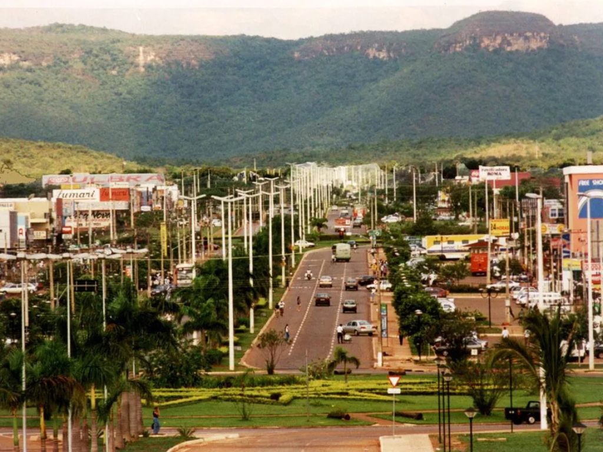

Tocantins é o estado mais novo da região Norte, criado oficialmente em 1988 a partir da divisão do estado de Goiás. Sua capital é Palmas, uma cidade planejada que se destaca pela organização urbana e pelo crescimento econômico. O estado possui características de transição entre a Amazônia e o Cerrado, apresentando grande diversidade natural. A economia tocantinense é fortemente baseada no agronegócio, especialmente na produção de soja, milho e criação de gado. O turismo também possui importância crescente, com atrações naturais como cachoeiras, rios e o Jalapão, conhecido pelas paisagens exuberantes e atividades de ecoturismo. Além disso, Tocantins vem se destacando pelo desenvolvimento da infraestrutura e pela expansão de suas atividades econômicas.

Voltar